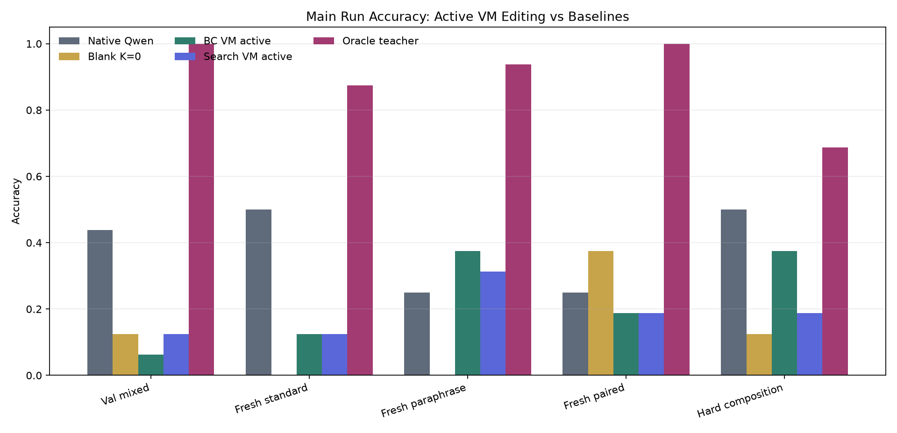
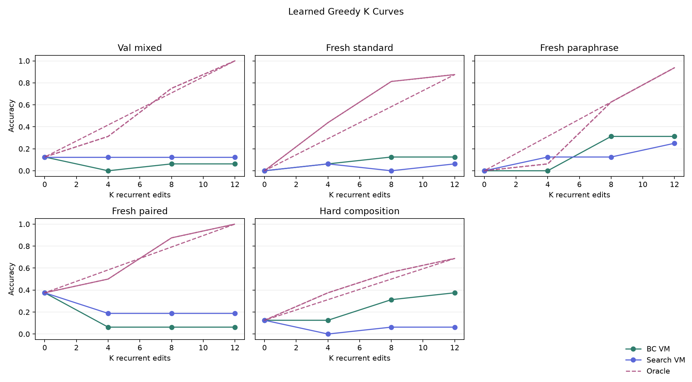
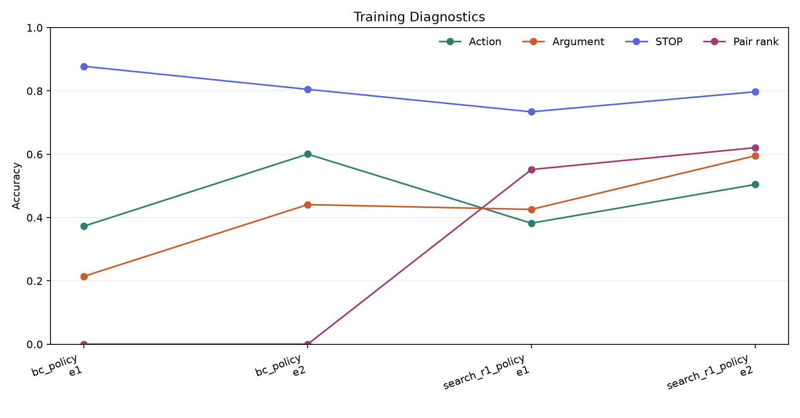
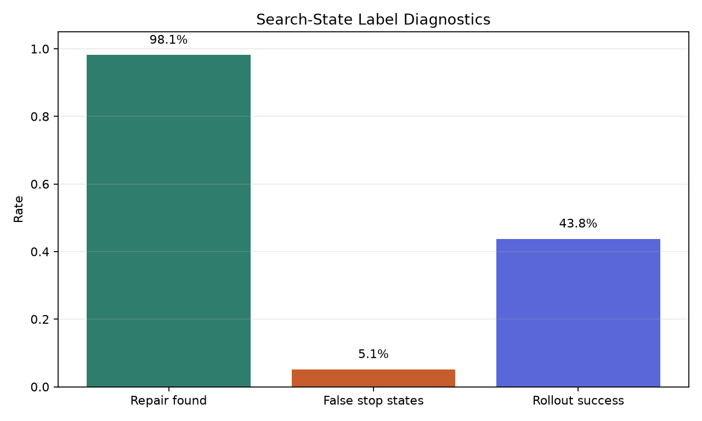
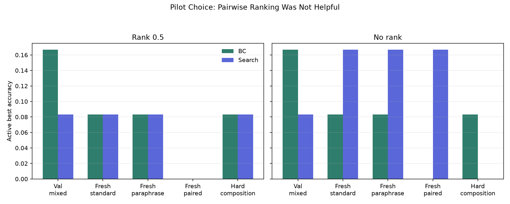

Search-Augmented Rollout Distillation
Verdict
Search-augmented rollout distillation did not improve the main active VM controller. The behavior-cloned VM controller already produced the best active score on three of five splits, tied search on one, and search improved only val mixed from 6.2% to 12.5%, still far below native Qwen. The oracle teacher remained much higher at 68.8% to 100.0%, so the task and VM action space still have large headroom.
The behavior-cloned VM controller beat native Qwen on fresh paraphrase tasks when using active K>0 edits (37.5% vs 25.0%). The search-distilled controller did not preserve that gain.
What Was Tested
This experiment trains Qwen/Qwen3-4B as a recurrent controller for a typed bytecode VM. Each recurrent step is one Qwen forward pass over the task prompt plus dense VM-state tokens. The model predicts one structured edit action or STOP; the VM executes the current program; then the updated VM state is fed back into the model.
The intervention is search-augmented rollout distillation: after behavior cloning, policy-visited states are repaired by bounded verified search, and the first action of the repaired trajectory becomes new supervision.
Main Accuracy
Scores are active K>0 VM-editing scores except for the explicit blank column.
| Split | Native Qwen | Blank K=0 | BC VM active | Search VM active | Oracle teacher |
|---|---|---|---|---|---|
| Val mixed | 43.8% | 12.5% | 6.2% | 12.5% | 100.0% |
| Fresh standard | 50.0% | 0.0% | 12.5% | 12.5% | 87.5% |
| Fresh paraphrase | 25.0% | 0.0% | 37.5% | 31.2% | 93.8% |
| Fresh paired | 25.0% | 37.5% | 18.8% | 18.8% | 100.0% |
| Hard composition | 50.0% | 12.5% | 37.5% | 18.8% | 68.8% |

K Curves
The greedy learned policy shows no clean monotonic K-scaling. The oracle curve confirms that the VM environment has substantial reachable headroom.

Training Diagnostics
| Phase | Epoch | Action acc | Arg acc | STOP acc | Pair-rank acc | States |
|---|---|---|---|---|---|---|
| bc_policy | 1 | 37.3% | 21.5% | 87.8% | 0.0% | 901 |
| bc_policy | 2 | 60.0% | 44.1% | 80.5% | 0.0% | 901 |
| search_r1_policy | 1 | 38.2% | 42.6% | 73.4% | 55.2% | 1703 |
| search_r1_policy | 2 | 50.4% | 59.5% | 79.7% | 62.1% | 1703 |

Repair Diagnostics
Search-state collection found verified completions for 787 of 802 policy-visited states (98.1%). It also saw 41 false-stop states and 43.8% rollout success before retraining.

Pilot Result
Pairwise ranking with weight 0.5 did not improve rollout accuracy and made the next on-policy collection worse. The main recipe disabled ranking and trained two search epochs.

Interpretation
The bottleneck is not simply obtaining verified repair labels: the main run found verified completions for 98.1% of policy-visited states. The problem is turning those labels into a policy that chooses useful global trajectories at inference time.
The next high-impact experiment should use rollout-level optimization: sample complete VM rollouts, score them with exact VM reward and false-stop penalties, then train preference or policy-gradient updates over full trajectories.